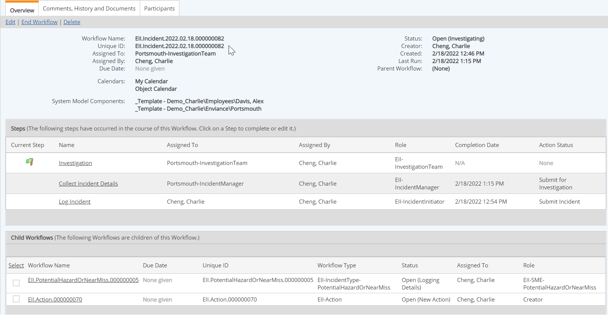
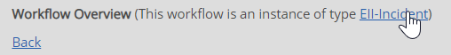

The Workflow Overview shows the properties of the workflow and the complete history, including the current status, steps completed or in progress, all participants, child or parent workflows (if any), comments and documents.
To view the workflow overview:
The Workflow Overview is displayed. The general information shown at the top includes the workflow name, status, assignee, due date, associated objects, associated documents, creator and creation date.
The Steps section shows the steps completed or in progress. The current step is flagged.

Child workflows, if any, are listed below the Steps section. If this workflow is itself a child workflow, the parent workflow is shown in the general information at top. (Links to parent and child workflows are available if you have permission to access them.)
Select the Comments, History and Documents tab to view Comments added to the workflow, associated documents, and complete history of the workflow.
Select the Workflow Participants tab to view all participants in the workflow.
Workflow Type: The Workflow Type from which this workflow instance was created in shown at the top of the page. If you have Manage Workflows permission, the type is a link that allows you to navigate directly to the type description.
